Práctica 5: Series de Fourier en tiempo continuo
Contents
Datos:
- Rodriguez Ramirez Marco Antonio
- Grupo 2MV1
Objetivos:
- Realizar gráficas de series de Fourier exponenciales y trigonométricas en tiempo continuo
- Manipulación de instrucciones en MATLAB
- Calculo númerico de los coeficientes de Fourier
Problema 2:
- Ejemplo 6.2. Con serie y espectro exponencial y A=3, no es necesario entregar el código, solo la aplicación al problema especifico, debe de indicar la función y los valores de sus coeficientes (sin incluir el procedimiento)
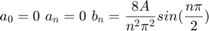
d0 = 0; dn = @(n) (12/((n^2)*pi^2))*exp(-1i*pi/2)*sin(n*pi/2); t0=0; tf=2; f=@(t) 6*t.*(t>=0 & t<0.5)+6*(1-t).*(t>=0.5 & t<1.5)+6*(t-2).*(t>=1.5 & t<2); armo=4; a=-5; b=5; sfc(t0, tf, dn, d0, f, armo, a, b, 1) armo=15; sfc(t0, tf, dn, d0, f, armo, a, b, 2)
Warning: Imaginary parts of complex X and/or Y arguments ignored Warning: Imaginary parts of complex X and/or Y arguments ignored Warning: Imaginary parts of complex X and/or Y arguments ignored Warning: Using only the real component of complex data. Warning: Imaginary parts of complex X and/or Y arguments ignored Warning: Imaginary parts of complex X and/or Y arguments ignored Warning: Imaginary parts of complex X and/or Y arguments ignored Warning: Using only the real component of complex data.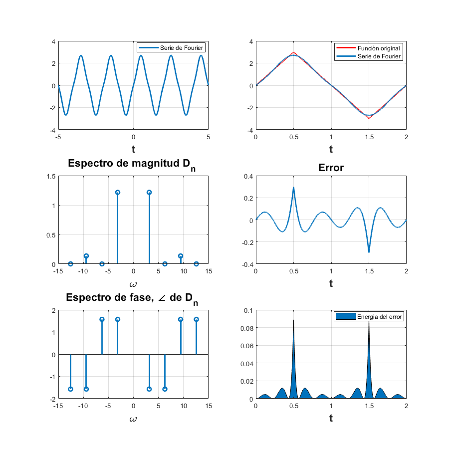 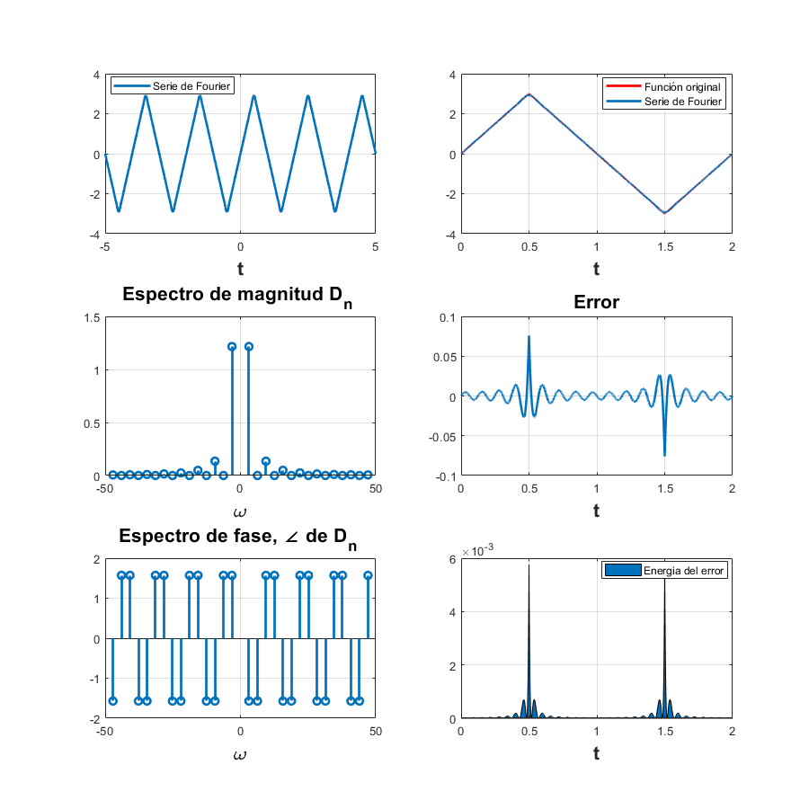
Problema 3:
- Ejemplo 6.4. Con serie y espectro exponencial, no es necesario entregar el código, solo la aplicación al problema especifico, debe de indicar la función y los valores de sus coeficientes (sin incluir el procedimiento)
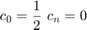
d0 = 1/2; dn = @(n) (1/(n*pi))*sin(n*pi/2); t0=-pi/2; tf=3*pi/2; f=@(t) 1*(t>=-pi/2 & t<pi/2)+0*(t>=pi/2 & t<3*pi/2); armo=4; a=-5*pi; b=5*pi; sfc(t0, tf, dn, d0, f, armo, a, b, 3) armo=15; sfc(t0, tf, dn, d0, f, armo, a, b, 4)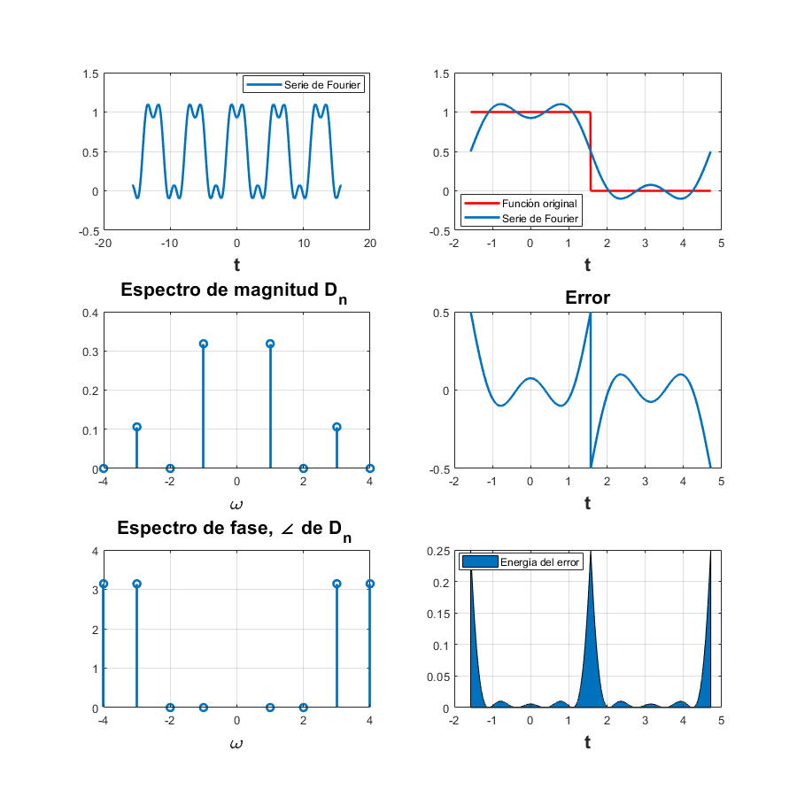 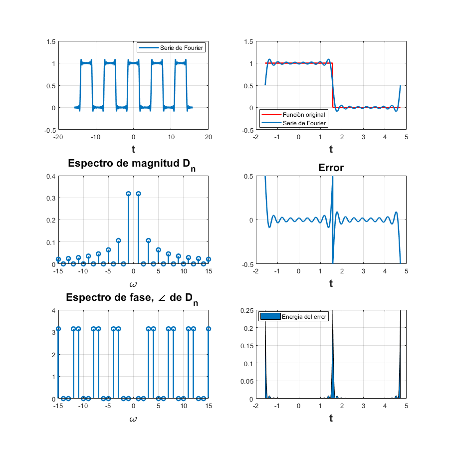
Problema 4:
- Ejercicio 6.5. Con serie y espectro exponencial, no es necesario entregar el código, solo la aplicación al problema especifico, debe de indicar la función y los valores de sus coeficientes (sin incluir el procedimiento) 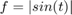 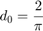 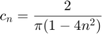
d0 = 2/pi; dn = @(n) (2/(pi*(1-4*n^2))); t0=0; tf=pi; f=@(t) abs(sin(t)); armo=4; a=-2*pi; b=3*pi; sfc(t0, tf, dn, d0, f, armo, a, b, 5) armo=15; sfc(t0, tf, dn, d0, f, armo, a, b, 6)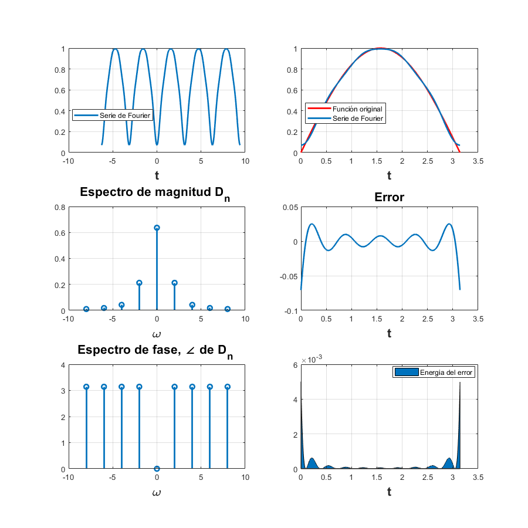 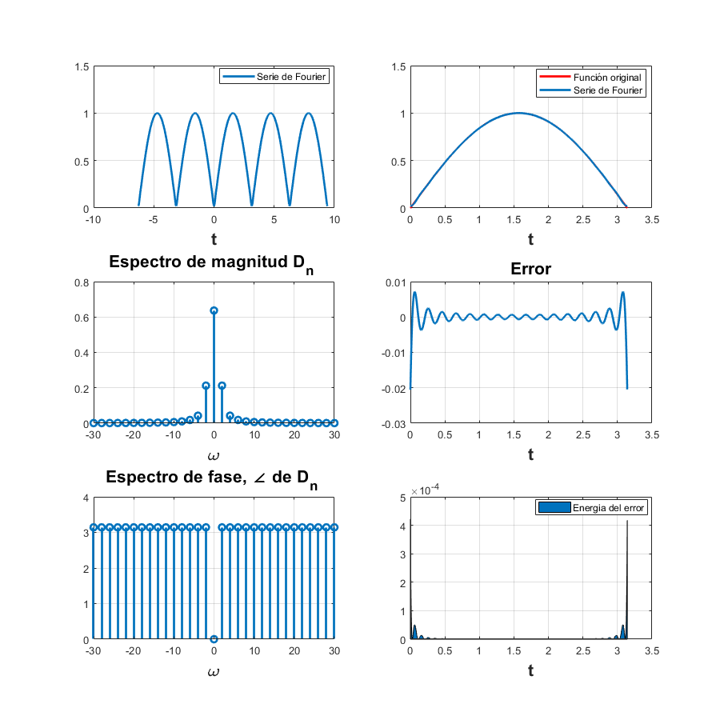
Problema 5:
- Ejemplo 6.7. Con serie y espectro exponencial y 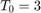 sin incluir la gráfica de f, error ni energía del error, no es necesario entregar el código, solo la aplicación al problema especifico, debe de indicar la función y los valores de sus coeficientes (sin incluir el procedimiento)
d0=1/3; dn=@(n) 1/3; t0=-1; tf=3; f=@(t) dirac(t); armo=4; a=-7; b=10; sfcd(t0, tf, dn, d0, f, armo, a, b, 7) armo=15; sfcd(t0, tf, dn, d0, f, armo, a, b, 8)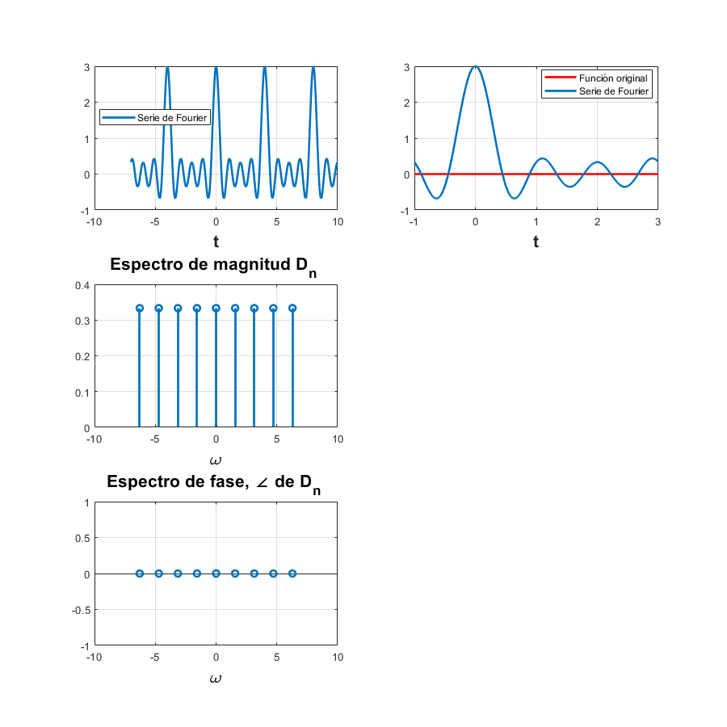 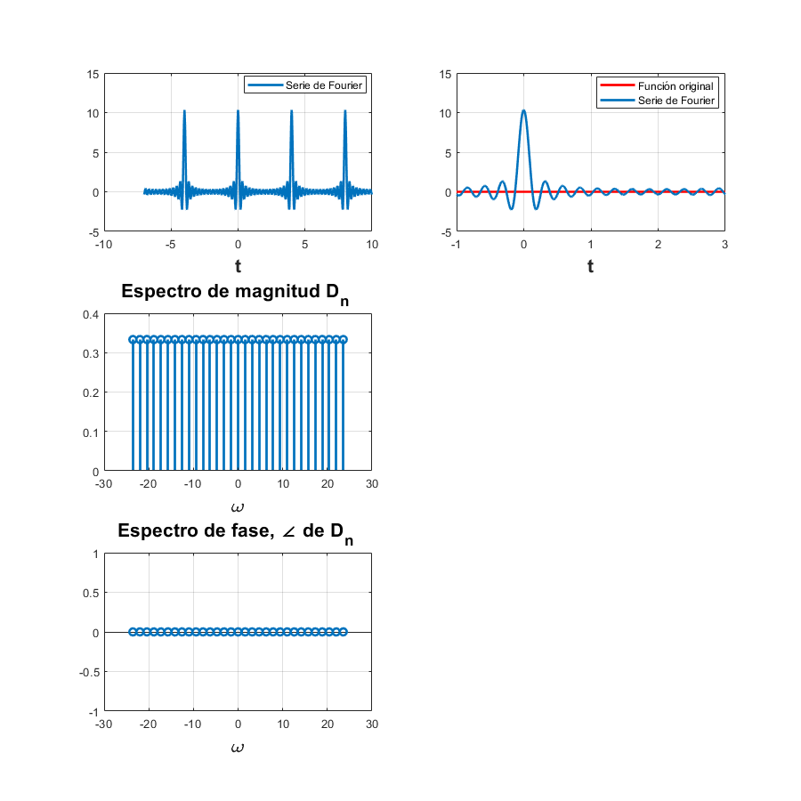